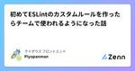
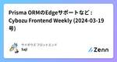

サイボウズ フロントエンドのフィード
https://zenn.dev/p/cybozu_frontend
サイボウズのフロントエンドに関わる人が発信するPublicationです
フィード

初めてESLintのカスタムルールを作ったらチームで使われるようになった話
サイボウズ フロントエンドのフィード
こんにちは、kintone 新機能開発チームに所属している 23 卒の柿崎です。この記事では、私が初めて ESLint のカスタムルールを作って npm で公開し、普段業務で触っているコードに適用されるまでについて紹介しようと思います。「自分でも ESLint のカスタムルール作れそう！作ってみよう！」と思ってもらえたら嬉しいです。実際に作ったものはこちらです 👇https://www.npmjs.com/package/eslint-plugin-switch-case-order きっかけkintone 新機能開発チームは kintone の領域ごとに複数のサブチームに...
6時間前

Prisma ORMのEdgeサポートなど : Cybozu Frontend Weekly (2024-03-19号) 2
2
サイボウズ フロントエンドのフィード
こんにちは! サイボウズ株式会社フロントエンドエンジニアの Saji (@sajikix) です。 はじめにサイボウズでは毎週火曜日に Frontend Weekly という「一週間にあったフロントエンドニュースを共有する会」を社内で開催しています。今回は、2024/03/19 の Frontend Weekly で取り上げた記事や話題を紹介します。 取り上げた記事・話題 Prisma ORM support for Edge functions is now in Previewhttps://www.prisma.io/blog/prisma-orm-support...
5日前

WebKit Features in Safari 17.4など: Cybozu Frontend Weekly (2024-03-12号)
サイボウズ フロントエンドのフィード
こんにちは！サイボウズ株式会社フロントエンドエンジニアのおぐえもん（@oguemon_com）です。 はじめにサイボウズでは毎週火曜日にFrontend Weeklyという「一週間にあったフロントエンドニュースを共有する会」を社内で開催しています。今回は、2024年3月12日のFrontend Weeklyで取り上げた記事や話題を紹介します。 取り上げた記事・話題 WebKit Features in Safari 17.4https://webkit.org/blog/15063/webkit-features-in-safari-17-4/Safari 17.4で...
14日前
JSR の Public Beta 公開など : Cybozu Frontend Weekly (2024-03-05号)
サイボウズ フロントエンドのフィード
こんにちは！サイボウズ株式会社 フロントエンドエキスパートチームの @mugi_uno です。 はじめにサイボウズ社内では毎週火曜日に Frontend Weekly と題し「一週間の間にあったフロントエンドニュースを共有する会」を開催しています。今回は、2023 年 3 月 5 日 の Frontend Weekly で取り上げた記事や話題を紹介します。 取り上げた記事・話題 Tempohttps://tempo.formkit.com/新しく登場した Date 操作用のライブラリである Tempo が公開されました。Intl を利用しつつ、Intl 自体の使いづら...
20日前
すべての主要ブラウザでshadowrootmode実装 - What's new in Browsers!
サイボウズ フロントエンドのフィード
https://www.mozilla.org/en-US/firefox/123.0/releasenotes/What's new in Browsers!は、サイボウズのフロントエンドエンジニアがブラウザの最新情報から気になるトピックを紹介するシリーズです。今回はFirefox 123から shadowrootmode とWebCodec APIについて紹介します。 <template> の shadowrootmode サポートhttps://developer.mozilla.org/en-US/docs/Web/HTML/Element/template...
22日前
Bundle Analyzer で Server Components と Client Components のバンドルサイズを可視化する
サイボウズ フロントエンドのフィード
この記事では、Next.js で Bundle Analyzer を導入して、Server Components と Client Components のバンドルサイズを以下のパターンで比較します。Server Components と Client Components の両方でライブラリを利用するServer Components のみでライブラリを利用するComposition Pattern を使用して Server Components のみでライブラリを利用する比較には Node.js とブラウザの両方で動作する date-fns を利用します。!Bundl...
1ヶ月前
Remix 2.7.0 リリースなど : Cybozu Frontend Weekly (2023-02-27号)
サイボウズ フロントエンドのフィード
こんにちは！サイボウズ株式会社フロントエンドエンジニアのまっつーです。 はじめにサイボウズでは毎週火曜日にFrontend Weeklyという「一週間にあったフロントエンドニュースを共有する会」を社内で開催しています。今回は、2024年2月27日のFrontend Weeklyで取り上げた記事や話題を紹介します。 取り上げた記事・話題 input type=“date” の沼から、ライブラリを導入する意義を考えるhttps://tech.mirrativ.stream/entry/2024/02/20/100000ブラウザ固有の不具合を回避するためにライブラリを選択す...
1ヶ月前
パフォーマンスパネルでパフォーマンスパネルを400%高速化など: Cybozu Frontend Weekly (2024-02-20号)
サイボウズ フロントエンドのフィード
こんにちは！サイボウズ株式会社フロントエンドエンジニアのおぐえもん（@oguemon_com）です。 はじめにサイボウズでは毎週火曜日にFrontend Weeklyという「一週間にあったフロントエンドニュースを共有する会」を社内で開催しています。今回は、2024年2月20日のFrontend Weeklyで取り上げた記事や話題を紹介します。 取り上げた記事・話題 NGINXのコア開発者が親会社と決別、新たに「freenginx」という名前でフォーク版を作成開始https://gigazine.net/news/20240215-freenginx/NGINXの主要開...
1ヶ月前
Interop 2024の重点領域から印象的な機能を紹介
サイボウズ フロントエンドのフィード
Interop 2024https://wpt.fyi/interop-2024?stableWebブラウザ間の相互運用性を高めるためのプロジェクトであるInteropで2024年にフォーカスされる機能群が発表されました。本記事では、Interop2024で対象となった機能のうち個人的に関心が高いものをいくつか紹介します。 font-size-adjusthttps://developer.mozilla.org/en-US/docs/Web/CSS/font-size-adjustfont-size-adjust は、小文字のフォントサイズを指定するCSSプロパティで...
1ヶ月前
typescript-eslint v7リリースなど : Cybozu Frontend Weekly (2024-02-13号)
サイボウズ フロントエンドのフィード
こんにちは! サイボウズ株式会社フロントエンドエンジニアの Saji (@sajikix) です。 はじめにサイボウズでは毎週火曜日に Frontend Weekly という「一週間にあったフロントエンドニュースを共有する会」を社内で開催しています。今回は、2024/02/13 の Frontend Weekly で取り上げた記事や話題を紹介します。 取り上げた記事・話題 Announcing TypeScript 5.4 Beta - TypeScripthttps://devblogs.microsoft.com/typescript/announcing-type...
1ヶ月前
画面キャプチャをより厳密にできるElement Capture API - What's new in Browsers!
サイボウズ フロントエンドのフィード
https://developer.chrome.com/blog/new-in-chrome-121?hl=enWhat's new in Browsers!は、サイボウズのフロントエンドエンジニアがブラウザの最新情報から気になるトピックを紹介するシリーズです。今回はChrome 121からOrigin Trialが開始されたElement Capture APIについて紹介します。 Element Capture APIhttps://developer.chrome.com/docs/web-platform/element-captureElement Capture...
2ヶ月前
Interop 2024の取り組みスタートなど : Cybozu Frontend Weekly (2024-02-06号)
サイボウズ フロントエンドのフィード
こんにちは! サイボウズ株式会社フロントエンドエンジニアの Saji (@sajikix) です。 はじめにサイボウズでは毎週火曜日に Frontend Weekly という「一週間にあったフロントエンドニュースを共有する会」を社内で開催しています。今回は、2024/02/06 の Frontend Weekly で取り上げた記事や話題を紹介します。 取り上げた記事・話題 テストの学習へようこそ！ | web.devhttps://web.dev/learn/testing/welcome?hl=jaweb.dev が公開している学習コンテンツのシリーズにテストのコン...
2ヶ月前
Intl.Segmenterはどうやって単語分割しているのか
サイボウズ フロントエンドのフィード
Intl.Segmenter についておさらいJavaScript には Intl と呼ばれる国際化 API があり、日時や数値のフォーマットを始めとする国際化に便利な機能が揃っています。Intl.Segmenter はこの Intl の一機能で、文字・単語・文章単位での文字列分割を可能にします。https://developer.mozilla.org/ja/docs/Web/JavaScript/Reference/Global_Objects/Intl/Segmenter文字単位での分割では複数のコードユニットやコードポイントを持った文字を考慮し、正確に見た目上の１文字（...
2ヶ月前
Next.js 14.1など: Cybozu Frontend Weekly (2024-01-30号)
サイボウズ フロントエンドのフィード
はじめにこんにちは！サイボウズ株式会社フロントエンドエキスパートチームの BaHo です。サイボウズでは毎週火曜日にFrontend Weeklyという「1週間の間にあったフロントエンドニュースを共有する会」を社内で開催しています。今回は、2024/01/30のFrontend Weeklyで取り上げた記事や話題を紹介します。 取り上げた記事・話題 TSKaigi 2024https://tskaigi.org/TypeScriptをテーマとした新しい技術カンファレンスです。 Next.js 14.1https://nextjs.org/blog/next-1...
2ヶ月前
<select>要素がより扱いやすく - What's new in Browsers!
サイボウズ フロントエンドのフィード
https://www.mozilla.org/en-US/firefox/122.0/releasenotes/What's new in Browsers!は、サイボウズのフロントエンドエンジニアがブラウザの最新情報から気になるトピックを紹介するシリーズです。今回はFirefox 122からサポートされた機能の中からLargestContentfulPaint APIと<select>要素に追加された2つの新機能について紹介します。 LargestContentfulPaint APIhttps://developer.mozilla.org/en-US/doc...
2ヶ月前
サードパーティCookieがChromeユーザーの1%で制限など: Cybozu Frontend Weekly (2024-01-16号)
サイボウズ フロントエンドのフィード
あけましておめでとうございます！サイボウズ株式会社フロントエンドエンジニアのおぐえもん（@oguemon_com）です。 はじめにサイボウズでは毎週火曜日にFrontend Weeklyという「一週間にあったフロントエンドニュースを共有する会」を社内で開催しています。今回は、2024年1月16日のFrontend Weeklyで取り上げた記事や話題を紹介します。 取り上げた記事・話題 React Aria Components v1 リリースhttps://react-spectrum.adobe.com/releases/2023-12-20.htmlAdobeは、...
2ヶ月前
Biome の 2024年のロードマップの公開と v1.5.0 のリリース
サイボウズ フロントエンドのフィード
このドキュメントは、次の Biome のブログの日本語訳になります。https://biomejs.dev/blog/roadmap-2024/https://biomejs.dev/blog/biome-v1-5/細かい内容については、ぜひ原文の方を読んでもらえると嬉しいです。 ロードマップ 2024コアコントリビューターとメンテナーが 2024 年にフォーカスしようとしていることを共有できることはとても嬉しいです。一方で、Biome はコミュニティ主導のプロジェクトであるため、取り上げている全てのアイデアのリリースを約束することはできません。もしいくつかのアイデアに共...
3ヶ月前
Next.js の Server Actions で引数を渡すときは bind を使おう
サイボウズ フロントエンドのフィード
この記事では、Next.js の Server Actions にフォームの入力値以外の情報を渡す方法について紹介します。 Server Actions とはNext.js の Server Actions は、クライアントサイドのイベント（例えばフォームの送信やボタンのクリック）をトリガーとして、サーバーサイドの関数を呼び出す機能です。この機能はプログレッシブエンハンスメントをサポートしており、JavaScript が読み込まれていない状況や無効になっている場合でもフォームを送信することができます。 使用例'use server' をファイルの先頭に追加して、サーバー側で実...
3ヶ月前
:has() が全ての主要ブラウザで利用可能に！ - What's new in Browsers!
サイボウズ フロントエンドのフィード
https://www.mozilla.org/en-US/firefox/121.0/releasenotes/What's new in Browsers!は、サイボウズのフロントエンドエンジニアがブラウザの最新情報から気になるトピックを紹介するシリーズです。今回は Firefox 121 からサポートされた機能の中から :has() と iframe の遅延読み込みについて紹介します。 :has()https://developer.mozilla.org/ja/docs/Web/CSS/:has:has() は CSS の擬似クラスで、引数に渡した相対セレクタとマッ...
3ヶ月前
CSS Nestingの構文が更新された
サイボウズ フロントエンドのフィード
!※この記事はCybozu Frontend Advent Calendar 2023の21日目の記事です。CSS Nesting（入れ子記法）の構文が更新され、タグで直接ネストできるようになりました🎉 タグのネストの制限これまでCSS Nestingではタグのネストには&が必要で、&なしにタグをネストした場合には無視されるという制限がありました。.parent { /* ⭕ Valid */ & div { color: blue; } /* ❎ Invalid */ p { color: red; }}...
3ヶ月前